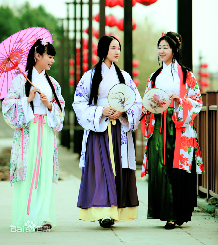
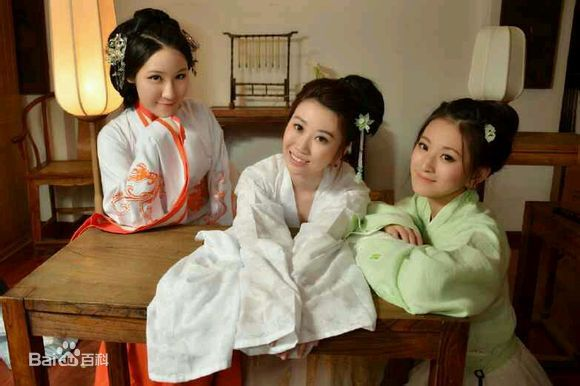
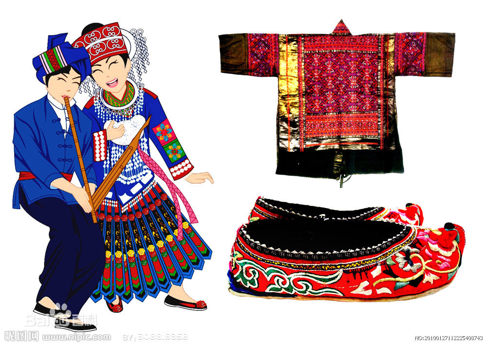

汉服
汉服，全称是“汉民族传统服饰”，又称汉衣冠、汉装、华服，是从黄帝即位到公元17世纪中叶（明末清初），在汉族的主要居住区，以“华夏－汉”文化为背景和主导思想，以华夏礼仪文化为中心，通过自然演化而形成的具有独特汉民族风貌性格，明显区别于其他民族的传统服装和配饰体系，是中国“衣冠上国”、“礼仪之邦”、“锦绣中华”、赛里斯国的体现，承载了汉族的染织绣等杰出工艺和美学，传承了30多项中国非物质文化遗产以及受保护的中国工艺美术。
与汉人一词类似，汉服中的“汉”字的词义外延亦存在着由汉朝扩大为整个民族指称的过程。如《马王堆三号墓遣册》关于“汉服”最早的记载：“简四四‘美人四人，其二人楚服，二人汉服’” 中的“汉服”是指汉朝的服饰礼仪制度，即《周礼》《仪礼》《礼记》里的冠服体系 ；而成书于唐朝的《蛮书》的记载：“初袭汉服，后稍参诸戎风俗，迄今但朝霞缠头，其余无异”中的“汉服”指的则是汉人的服饰礼仪制度
汉服“始于黄帝，备于尧舜” ，源自黄帝制冕服 。定型于周朝，并通过汉朝依据四书五经形成完备的冠服体系，成为神道设教的一部分。 因此后来各个华夏朝代均宗周法汉以继承汉衣冠为国家大事 ，于是有了二十四史中的舆服志。“黄帝、尧、舜垂衣裳而治天下，益取自乾坤” ，是说上衣下裳的形制是取天意而定，是神圣的。汉服还通过华夏法系影响了整个汉文化圈，亚洲各国的部分民族如日本、朝鲜、越南、蒙古、不丹等等服饰均具有或借鉴汉服特征
- 
- 
- 

 服饰
服饰